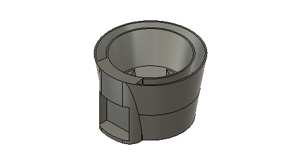
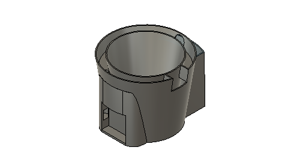
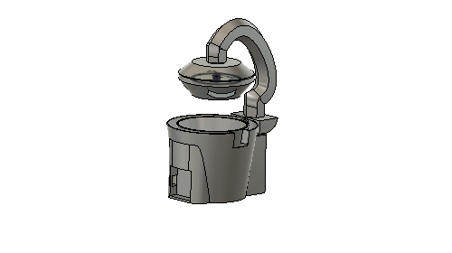
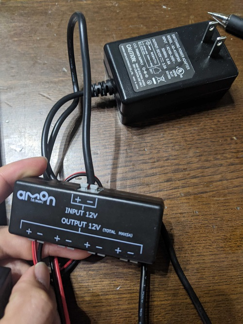
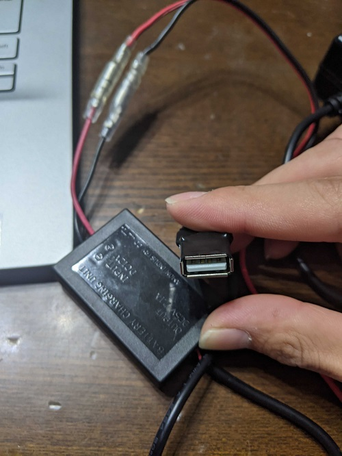
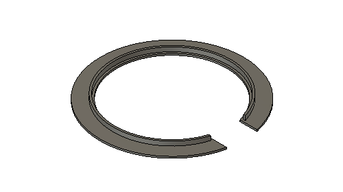

タンクを作ったが配線の問題点が出てきたためタンクを改良した。

これだと配線が水の下を通ったり水の中を通すこととなり改善が必要だった。

タンクの水が入る上に空間を作成することにより配線を水に触れることなく配線することが可能になった。

完成イメージはこんな感じ
M5配線用のtypecケーブルの降圧をする。
電源から１２Vが来ていてM5に使用する電圧は５VなためDCDCコンバータで１２－５vに降圧する。


蓋を作成した。蓋があることにより配線が見えなくなる。
